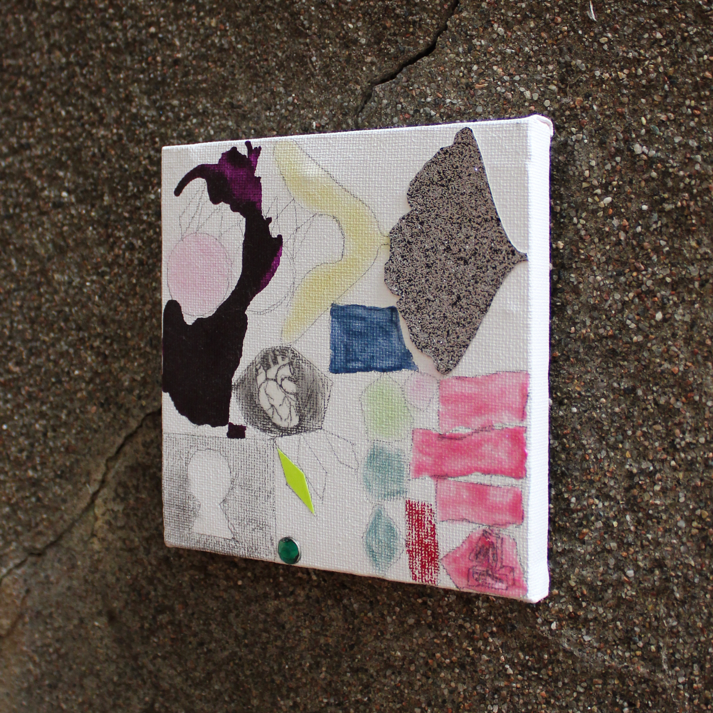

You're Exactly What I'm Not, Université de Montréal hydro facility entrance (site-specific), Montréal/Tiohtià:ke/Mooniyang, QC. On Sunday, June 25th 2023.
2022/07/19 (Blueness), eyeshadow, graphite, ink, nail polish, pin, sticker, 5 x 5", 2022.
When I moved to Montréal last year, I made a bunch of these tiny paintings by tracing and using objects I had scavenged. I decided at the last minute to include two of them in You're Exactly What I'm Not as all of my other paintings were effectively held hostage by a slumlord (I got them back). It feels poignant that this show ended up being made up of work at times I didn't have access to a studio and at opposite ends of my time in Montréal. On the day of the show, Montréal had the worst air quality in the world, hence the warm light.
Best,
Jasper
detail of You're Exactly What I'm Not, Passive Amplifiers
2022/07/14 (Coeur), eyeshadow, graphite, ink, nail polish, plastic jewel, sticker, 5 x 5", 2022.

detail of You're Exactly What I'm Not, Passive Amplifiers